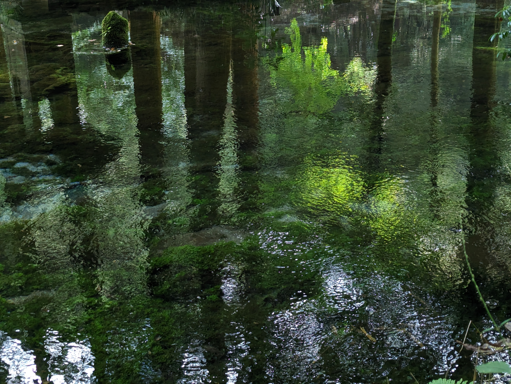

熊本県産山村、池山水源のほとりにある小さなカフェスタンドです。
阿蘇の自然に囲まれながら、ゆっくりとした時間をお過ごしください。
日本名水百選にも選ばれた池山水源のすぐそば。澄んだ空気と緑の中でひと休みできます。
春・夏・秋・冬、それぞれの季節に合わせたメニューをご用意しています。
池山水源の駐車場（約20台）をご利用いただけます。水源散策のついでにぜひお立ち寄りください。
| 店舗名 | カフェスタンド フォーシーズン |
|---|---|
| 住所 | 〒869-2704 熊本県阿蘇郡産山村田尻14-4 |
| 電話 | 090-8959-9993 |
| 営業時間 | 10:00 〜 16:00 |
| 定休日 | 毎週月曜日 |
| 駐車場 | 池山水源の駐車場をご利用ください（約20台） |
池山水源の駐車場（約20台）をご利用いただけます。カフェまで徒歩すぐです。
予約不要でご来店いただけます。ただし、混雑時はお待ちいただく場合がございます。
はい、全メニューテイクアウト対応しております。池山水源を散策しながらお楽しみいただけます。
もちろんです。お子様連れのお客様も大歓迎です。池山水源の自然の中でゆっくりお過ごしください。
屋外・テラス席であればペット同伴可能です。詳細はお電話（090-8959-9993）でご確認ください。
荒天時は臨時休業することがあります。ご来店前にお電話またはInstagramでご確認いただくことをおすすめします。
各種電子決済がご利用いただけます。現金のほか、キャッシュレスでのお支払いも歓迎しております。
産山村の自然の中で、ゆっくりとした時間をどうぞ。
ご不明点はお電話でお気軽にどうぞ。